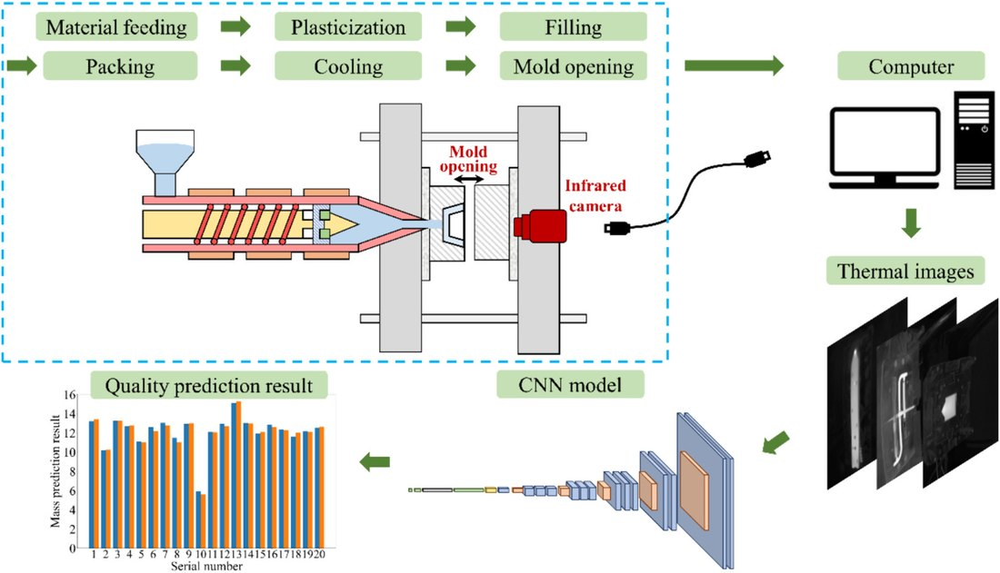
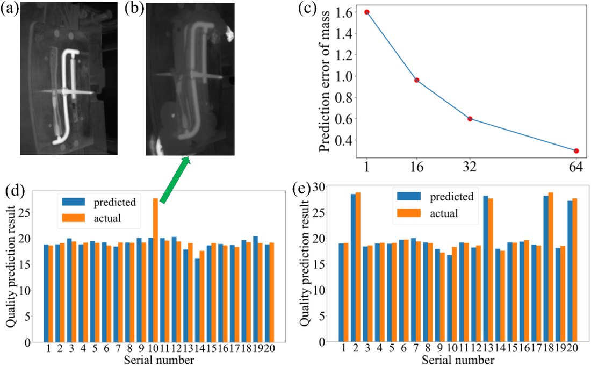

红外温度场 + CNN 注塑质量预测Infrared Temperature Field + CNN Quality Prediction
用红外相机在线采集制件温度场，结合 CNN 把“温度场分布 → 质量指标”的复杂非线性关系映射出来，对质量、抗拉强度、翘曲变形三项指标做无损在线预测，优化后平均相对误差分别 3.48%、3.60%、8.00%。An infrared camera captures the part's temperature field online, and a CNN maps the complex nonlinear relation from field to quality—non-destructively predicting mass, tensile strength and warpage, with optimized mean relative errors of 3.48%, 3.60% and 8.00%.
背景Background
质量与制件温度场分布密切相关，但“用温度场定量预测质量”一直是难点。Quality correlates closely with the temperature field, yet quantitatively predicting quality from it has been hard.
方法Method
- 搭建基于红外相机的在线温度场测量系统。Built an infrared-camera online temperature-field measurement system.
- 不同工艺参数下做注塑实验、采集热图建数据集；图像分割 + 数据增广预处理。Collected thermal images under varied parameters; preprocessed with segmentation and augmentation.
- 构建 CNN 映射温度场 → 质量；超参优化 + 五折交叉验证。Built a CNN mapping field → quality; hyperparameter tuning + 5-fold cross-validation.
结果Results
- 优化后平均相对误差：质量 3.48%、抗拉强度 3.60%、翘曲变形 8.00%。Optimized mean relative error: mass 3.48%, tensile 3.60%, warpage 8.00%.
- 红外温度场作“软测量”输入 + CNN 端到端预测多质量指标。Infrared field as a soft-sensing input + CNN end-to-end multi-metric prediction.
图片Figures


本人熟悉其方法思路（领域学习 / 技术调研）。I am familiar with the method (domain study / technical review).